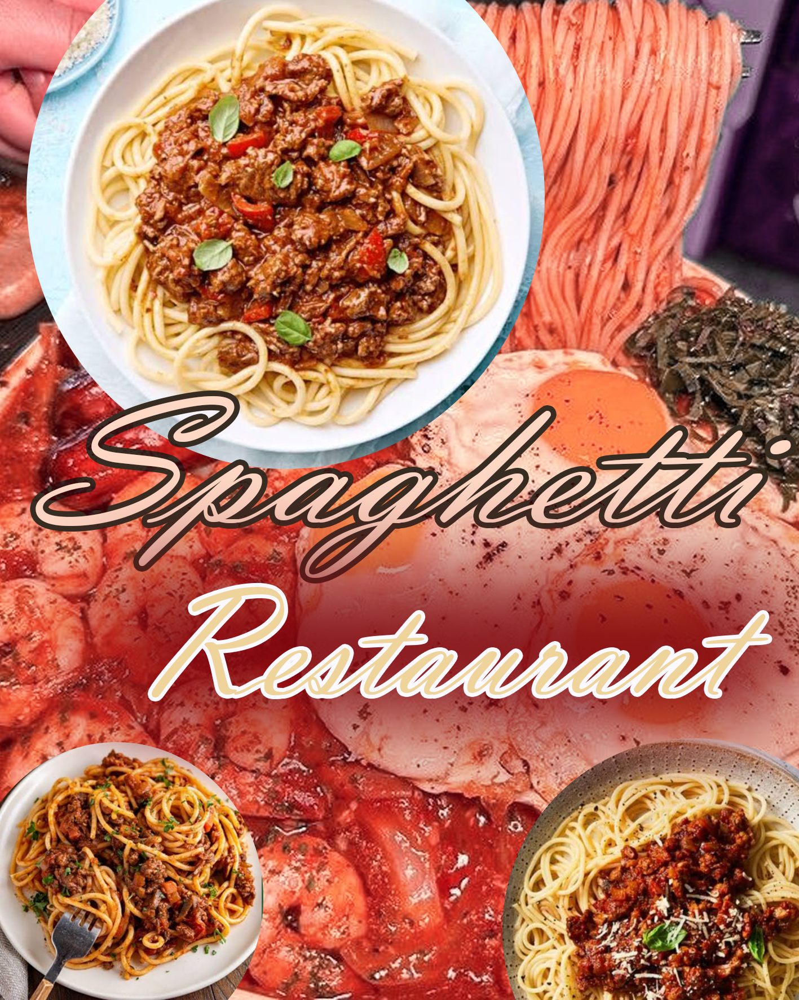

WHO IS ILESANMI MARY
 Mary Abisola Ilesanmi: A Journey of Resilience, Faith, and Growth
Mary Abisola Ilesanmi: A Journey of Resilience, Faith, and Growth
My name is Mary Abisola Ilesanmi, born on July 25, 200* in Ilesa, Osun State, Nigeria. As the only daughter and the last born of my parents, I cherish the unique bond I share with my two brothers, Ilesanmi Olamiposi Emmanuel (MC Nipper), and Ilesanmi Adekunle Samuel. I come from a humble yet strong Christian background, where faith, love, and family have always been central pillars of my life. My parents, Oluwaseye Ilesanmi Omirin, a farmer and politician, and Segun Titilayo Ilesanmi, the CEO of Titilayo Weaving (known for Aso Òfì), are both natives of Ilesa, and they instilled in me the values of hard work and dedication. I grew up in Ilesa, specifically on Arimoro Street, where I developed a deep appreciation for my roots. Though I'm an introvert and oen find solace in solitude, I've learned over time the importance of engaging with others, especially through my faith journey. I started my Christian walk with Christ Apostolic Church (CAC) during my childhood and later transitioned to Anglicanism during my tertiary education. My mother tongue is Yoruba, and I'm proud of my cultural heritage. Educational Journey: From Ilesa to Higher Education My educational path began at Bolakale Children's School in Ilesa, where I progressed from kindergarten through to primary school. Later, I moved to Ultimate Group of Schools, where I completed my primary and secondary education. In the academic sphere, I've always strived for excellence, passing external exams such as the Common Entrance, BECE, and WAEC with determination. Notably, I served as the Assistant Senior Prefect during my final year in 2022/2023. In 2023, I took the critical step toward higher education, sitting for exams such as the JAMB, WAEC, and NECO. While the WAEC results weren't as I had hoped, my NECO results gave me the breakthrough I was waiting for, allowing me to move forward in my academic journey.
However, the road to university wasn't without its challenges. I faced the difficulty of applying for schools aer the deadline for many had passed. By God's grace, I applied to Bamidele Olumilua University and the Federal University of Technology, Akure (FUTA). Initially, I wasn't thrilled with my course choice at FUTA—Forestry and Wood Technology—but my father encouraged me to accept the admission and trust in the process. I reluctantly did, but I am now grateful for the growth it has provided me. In February 2024, I began my studies, and in the second week, I was nominated as the class representative for the Forestry and Wood Technology department. Despite the challenges and frustrations, I won the election by a large margin, becoming the class representative of the 2027 batch. Leadership and Personal Growth Being a class representative in a course I initially didn't want to pursue has been a transformative experience. The role demanded resilience, leadership, and patience as I attended meetings, coordinated course lists, and dealt with the day-to-day responsibilities of serving my peers. This experience has not only enhanced my leadership skills but has also expanded my network within my department. Though there have been times when I've faced frustration, bullying, and doubt from colleagues, my faith and the support of my family have kept me grounded. I continue to push forward with the hope of finishing strong and excelling in my studies. At present, I am in my second year of study, still working diligently to build a career in Forestry and Wood Technology. Faith, Hobbies, and Aspirations Throughout my journey, one constant has been my faith. I'm a Christian, and gospel music, especially by artists like Sola Allyson, has always been a source of strength and inspiration for me. I also enjoy singing and occasionally tutoring, sharing knowledge and wisdom with others. Though I love watching movies, comedy remains my preferred genre. I don't conform to societal trends such as wearing hair rings or trousers, as I find comfort
 MY FAVORITE PERSON
MY FAVORITE PERSON
My favorite person in the entire world is my mum. Aer God, she holds the highest place in my heart. She is more than just a mother to me—she's my best friend, my role model, my safe space, and my greatest source of strength. Her love is unconditional, her sacrifices are countless, and her prayers are the foundation of my life. There's never been a moment when she hasn't been there for me—whether I needed comfort, guidance, or just someone to listen. She has taught me the value of kindness, hard work, faith, and resilience. Even in the toughest times, she remains strong, graceful, and full of hope. Her presence in my life is a blessing I can never take for granted. I honestly don't know where I'd be without her. She inspires me daily to be a better person, to love deeply, and to live with purpose. Aer God, it's her love that keeps me going. She is truly my everything."
MY FAVORITE MEAL
Ever since I was a child, I've never liked beans. Whenever my mum cooked beans, she would always prepare a separate meal just for me—usually either rice or spaghetti—anything but beans. Growing up, I noticed that I preferred rice over spaghetti. It was my go-to meal. However, as I got older, something changed. I gradually developed a strong love for spaghetti, so much so that it eventually became my favorite dish. My love for spaghetti has only grown over time, and now I enjoy it more than rice. These days, I cook spaghetti in different delicious styles. Sometimes I make it as jollof spaghetti, other times I prepare it plain (white) and pair it with fried stew. No matter the method, spaghetti remains a dish I truly enjoy and never get tired of.
MY JOURNEY IN FUTA SO FAR
I never really wanted to accept the admission into FUTA. I wasn't interested in the school from the beginning, but I went ahead and accepted it with a heavy heart. Aer paying the acceptance and school fees, I traveled to Akure to begin my studies. When I arrived, I was surprised to find I was the first student to resume in my department. On my first day, I met some students who helped me find Alo Tolulope, the Class Representative of the 2026 set. She guided me through the physical registration process. (Importance of asking for help) A few weeks later, lectures began. What started with just one student quickly grew to over fiy. I began attending night classes, hoping to improve my academic performance, but most of the time I ended up sleeping rather than reading. By the second semester, I realized night classes weren't helping me, so I started using the church library. There, I could read for hours without sleeping, but I started neglecting my prayer life. Aer long study hours, I would get home too tired to pray. (Know your learning environment and don't neglect spiritual balance) I also started attending tutorials in my first semester to catch up with lectures. One course, MEE 101, was especially difficult for me. It involved technical drawing — something I disliked. Despite being an introvert, I made a friend to help me understand it better. I attended tutorials consistently, and to the glory of God, I got a B in the course. (Step out of your comfort zone to grow)
When the first semester test came, it was tough. The struggle to enter the exam hall was real — some students fainted or got injured due to the rush. Even with all that, I still hadn't fully realized how serious academics at FUTA could be. During exams, I sometimes arrived late or didn't prepare properly. (Be prepared; take academic life seriously) Midway through the second semester, our first semester results were released. Initially, I was happy with my performance — until I heard students from other departments discussing their scores. They performed far better and were still not satisfied. That was my wake-up call. I realized I had been too comfortable. That day, I returned home in a bad mood and began to reflect deeply. (Never settle for less; evaluate yourself oen) That reflection taught me something important: “Don't isolate yourself from the brethren — it helps a lot.” I went back to using the church library for night reading, but once again, I found myself forgetting my prayer life. When we resumed 200 Level, it felt like I was starting over. Aer the difficult experiences of 100 Level, I finally understood that studying at home worked best for me. I began studying from home and also registered for the school library. Whenever I had free time, I made sure to use the library. Looking back, I realized that if I hadn't isolated myself due to being introverted and thinking I knew it all, I would have made better choices earlier. (Be humble and open to learning from others) FUTA is not a school where you can afford to isolate yourself. Opportunities are everywhere — academic, spiritual, physical, and financial — but they oen come through people. In my early days, I ignored many people who tried to connect with me, not realizing I would need them later. (Network and build meaningful relationships)
MY FAVORITE COURSE SO FAR AT FUTA
My favorite course so far at FUTA was taken during the first semester of my 200 level. The course is called Biochemistry (BCH 201). It's a university course, not specific to my department. Course Content and First Impression Biochemistry combines both biology and chemistry. The course mainly focused on biomolecules such as lipids, proteins, carbohydrates, cells, acidity, alkalinity, and more. Despite the rumors I heard about the course being difficult and complex, I made up my mind from the very beginning that this course would be the simplest for me this semester. From the first lecture, I developed a strong interest in the course. I always sat at the front of the class with 100% concentration. My interest in Biochemistry grew even more as the lectures progressed.
Effort and Study Habits The course inspired me to engage in extra learning activities such as researching online, going to the library to read textbooks, and studying the departmental manual at home. One particular topic that deepened my love for the course was the topic on "The Cell". It helped me understand concepts I missed during my first-year biology classes, so I made sure to study this topic thoroughly. Challenges and Determination Although the course was stressful—with weekly assignments and daily reading to stay on track—I found it easy because I had already determined to excel in it from the start. I prepared seriously for both the tests and exams by studying and solving numerous past questions. I didn't attend any tutorials because, with God's help, I found the course manageable on my own. What I Cherish Most One thing I really cherish about BCH 201 is that it taught me how to use my leisure time wisely. It gave me a sense of discipline and direction. I'm hopeful for a good result, and I'm grateful for the valuable knowledge and habits this course has helped me build
MY LIFE BEFORE AND AFTER BECOMING THE CLASS REPRESENTATIVE
Before becoming the class representative, my life felt like a mystery—introverted, unproductive, and lacking direction. I kept to myself, rarely engaging with others or participating in meaningful activities. I found myself involved in things that had no positive impact on my life—decisions I later realized were irrevocable and unhelpful. However, after being elected class representative, everything began to change. I took on new responsibilities that pushed me to grow. I started learning new vocabulary, improving my communication skills, and gradually stepping out of my shell. Though I still consider myself introverted, I've become more open—especially when it comes to helping my classmates with academic issues or offering support in other areas. This role has taught me leadership, accountability, and the value of being a voice for others. It has also helped me discover potential I never knew I have
FUTA PHYSICAL DESCRIPTION
The Federal University of Technology Akure (FUTA), located in Akure, Ondo State, Nigeria, boasts a campus that harmoniously blends modern infrastructure with natural landscapes, reflecting its commitment to technological advancement and environmental sustainability.
Campus Layout and Environment Spanning approximately 5 square kilometers on the northwestern flank of Akure, FUTA's campus is characterized by a gently sloping terrain with elevations increasing from the east and south towards the northwest . The university comprises multiple campuses, including Obanla, Obakekere, and the Centre for Entrepreneurship in Ibule, as well as an expansive area along the Owo-Benin Road . Architectural Features FUTA's architecture reflects a blend of functionality and aesthetic appeal. Notable structures include the Obafemi Awolowo Auditorium, a 2,500-capacity facility, and the New Senate Building. The campus also features student hostels, an International Scholars' Lodge, lecture theatres, and a university bookshop. The Albert Ilemobade Library, a two-story building covering 1,614.74 m ², accommodates up to 2,500 readers and serves as a central academic resource . Green Spaces and Aesthetic Enhancements
The university places a strong emphasis on environmental aesthetics. The Department of Industrial Design has significantly contributed to campus beautification through projects that incorporate indigenous design elements into graphics, textiles, and ceramics . Additionally, the campus features diverse vegetation types, reflecting local climatic variations and human use. Facilities and Amenities FUTA offers a range of facilities to support student life and academic pursuits. These include well-equipped laboratories, research centers, computer centers with Wi-Fi access, sports fields, courts, gyms, student hostels, cafeterias, food courts, a health center, auditoriums, and event spaces . The university also operates FUTA Radio (93.1MHz), providing educational and entertainment content to the campus community
A DAY I WOULD NEVER FORGET
When I was in SS2, one of my friends at secondary school helped me get a SIM card. I couldn't buy it myself at the time because I didn't have a NIN. After she gave me the SIM, I inserted it into an unused phone I found at home. A few days later, I opened Facebook on the small phone and started engaging online. For a few months, nothing unusual happened. Eventually, I used that same SIM card to register for my NIN. In the following year, 2024, I needed to register for JAMB. To do this, I had to use the same SIM I had used to register my NIN, in order to receive a profile code. My dad had no idea that I had gotten a SIM back in secondary school, so he was surprised when I brought it out. On January 18th, 2024, I successfully registered for JAMB and nothing seemed out of place. Later that day, when I returned home from the JAMB registration center, everything still seemed fine. In the evening, my dad asked me to give him the SIM so he could insert it into his phone to help, since I didn't have a personal phone yet. I gave it to him without any argument. The following week, on Monday, January 23rd, I went to school as usual. When I returned home that day, I immediately sensed that something was wrong. The atmosphere felt tense. I greeted my dad, and he began asking me some strange, historical questions. I answered them, still confused. I went to my room and saw my mum. She, too, began asking anxious and suspicious questions. I still didn't understand what was going on. That night, my dad called me and asked, “Who is Samuel?” He explained that someone named Samuel had been calling the SIM card all day and sending multiple love messages. I told him the truth—I don't know Samuel personally. We had only interacted online. It hadn't developed into a relationship or anything serious, and I still don't know how he got my number. But honestly, I made a mistake by entertaining a stranger without knowing his identity. That was foolish of me. The matter became more serious than I expected. My dad was very upset. He even followed me to school and reported the issue to the school principal. The situation became so serious that many of my classmates were called in for questioning about Samuel. This whole event ruined not just my day but the weeks that followed. I couldn't move around freely at home anymore—my dad kept mocking me. Even at school, some teachers and classmates started treating me differently. Since that experience, I made a decision: before I chat with anyone online again, I will make sure I know exactly who they are and where I got their contact from. I will never forget this experience.
Notable Places:
1. Secondary School - Where your friend got the SIM for you and where your dad
reported the issue to the principal.
2. Home - Where you used the SIM, received the messages, and had the tense
conversation with your parents.
3. JAMB Registration Center - Where you registered for JAMB on January 18th, 2024.
4. Your Room - Where you encountered your mum and where part of the questioning
happened.
5. Principal's Office - Where the incident was reported and investigations involving
classmates were held.
PLACES I WOULD LIKE TO VISIT
By God's grace, there are many places I hope to visit in the coming years. My dreams of traveling are not just for leisure, but also to broaden my knowledge and gain deeper insights into my field of study. Firstly, I would love to travel abroad to countries such as the United Kingdom, the United States of America, and Australia. These countries are well-known for having advanced educational systems and institutions that offer more enlightenment and exposure in my course of study. Visiting these places will allow me to explore new learning environments, interact with professionals in my field, and possibly pursue further education or training opportunities. Within Nigeria, I am especially interested in exploring the eastern region. The East is rich in culture, history, and educational opportunities that can also contribute greatly to my personal and academic growth. Traveling within Nigeria will help me understand different perspectives and expand my knowledge of local practices and innovations related to my course. Ultimately, my goal in traveling—both internationally and within Nigeria—is to gather diverse ideas and experiences that will enrich my understanding and prepare me for a successful career.